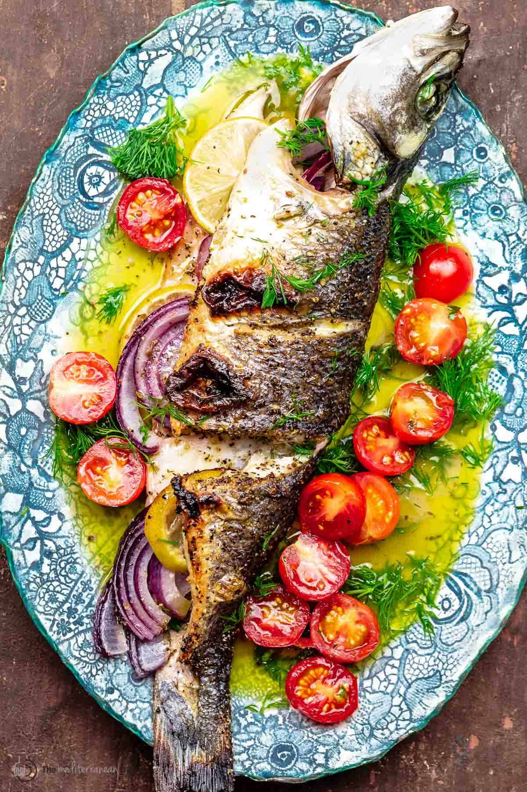

Oven Baked Greek Branzino
Home

Description
Branzino, also known as European sea bass, is a light, flaky white fish. It has a subtle sweet taste. This recipe bakes a whole branzino infused with fresh lemon, garlic, and herbs.
Ingredients
- 1 pound whole branzino
- Extra virgin olive oil
- 1/2 a lemon
- 1/2 a red onion
- 1/2 cup fresh dill
- 1 cup cherry tomatoes
- Ladolemono sauce
Steps
- Heat the oven to 400 degrees F.
- Pat the fish dry. Score the fish on both sides. Rub the fish with kosher salt and black pepper on both sides, in score marks, and cavity.
- Stuff the fish cavity with sliced onions and lemon
- Roast in the oven on one side for 5 minutes. Flip and roast the other side for 5 to 7 minutes. Turn the broiler on and place the fish about 6 inches from the heat source until the skin chars
- While the fish is cooking prepare the Ladolemono sauce.
- As soon as the fish is finished cooking, remove it from the oven. Transfer the fish to a plate and immediately drizzle as much of the Ladolemono sauce as you wish. Toss the cherry tomatoes with a little salt and spoon them over the fish.